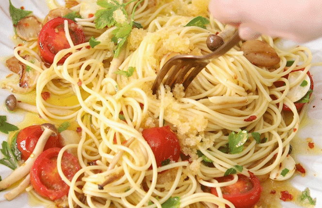

알리오올리오 만들기

- 혼자 먹을 양이라 파스타는 100원짜리
동전 크기만큼 잡아서 사용했어요
통마늘은 편으로 썰어 준비해주세요.
- 끓는 물에 소금을 약간 넣어 준뒤
면을 넣고 7~8분정도 삶아주세요
- 면이 익는 동안 오일소스를 만들어줄꺼예요
팬에 올리브유를 4~5큰술 정도 넉넉히 넣어주세요
- 그다음 편마늘과 다진마늘, 페페론치노를 같이 넣고
잘 섞어주시면 기본 오일소스는 준비된거예요
- 이 다 익었으면 오일소스 팬에 불을 약하게 올리고
마늘이 노릇노릇 해질때까지 익혀주세요
마늘이 익기전에 면을 넣으면 안된다고 하더라고요
레시피 출처:https://www.10000recipe.com/recipe/6889388